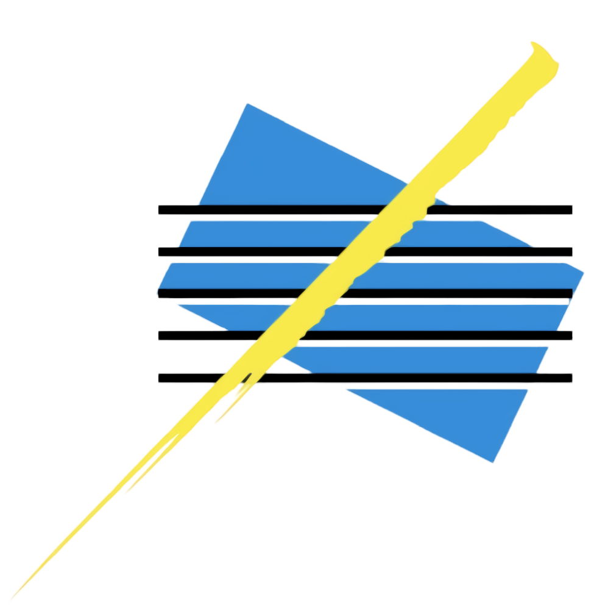

<ion-header>
  <mat-toolbar color="primary">
    <button (click)="return()" slot = "start" mat-icon-button class="example-icon" aria-label="Example icon-button with menu icon">
      <mat-icon>arrow_back</mat-icon>
    </button>
    <span>Menu de creación  de turnos</span>
    
    <span class="example-spacer"></span>
  </mat-toolbar>
</ion-header>

<ion-content>  
  <form [formGroup]="statusCreateForm" (ngSubmit)="onFormSubmit()">
    <mat-form-field appearance="outline">
      <mat-label>Tipo</mat-label>
      <mat-select formControlName = "type" type = "text">
        <mat-option value="Teletrabajo">Teletrabajo</mat-option>
        <mat-option value="Presencial">Presencial</mat-option>
        <mat-option value="Baja por enfermedad">Baja por enfermedad</mat-option>
        <mat-option value="Baja por vacaciones">Baja por vacaciones</mat-option>
        <mat-option value="Otro">Otro</mat-option>
      </mat-select>
    </mat-form-field>  
    <mat-form-field class="form-field" appearance="outline">
      <mat-label>Fecha de inicio</mat-label>
      <input matInput [matDatepicker]="picker" formControlName = "startDate">
      <mat-datepicker-toggle matSuffix [for]="picker"></mat-datepicker-toggle>
      <mat-datepicker #picker></mat-datepicker>
      <mat-error *ngIf="statusCreateForm.controls.startDate.touched && statusCreateForm.controls.startDate.invalid">
        <span *ngIf="statusCreateForm.controls.startDate.errors.required">This field is mandatory.</span>
      </mat-error>
    </mat-form-field>

    <mat-form-field class="form-field" appearance="outline">
      <mat-label>Fecha de finalización</mat-label>
      <input matInput [matDatepicker]="picker2" formControlName = "endDate">
      <mat-datepicker-toggle matSuffix [for]="picker2"></mat-datepicker-toggle>
      <mat-datepicker #picker2></mat-datepicker>
      <mat-error *ngIf="statusCreateForm.controls.endDate.touched && statusCreateForm.controls.endDate.invalid">
        <span *ngIf="statusCreateForm.controls.endDate.errors.required">This field is mandatory.</span>
      </mat-error>
    </mat-form-field>
    <mat-form-field appearance="outline">
      <mat-label>Usuario</mat-label>
      <input matInput formControlName = "userEmail" type = "email"placeholder = "Empleado" required>
      <mat-error *ngIf="statusCreateForm.controls.userEmail.touched && statusCreateForm.controls.userEmail.invalid">
        <span *ngIf="statusCreateForm.controls.userEmail.errors.required">This field is mandatory.</span>
      </mat-error>
    </mat-form-field>  
    <ion-row>
      <ion-col>
        <button mat-raised-button color = "primary" class = "add-form-submit"  type="submit" shape="round" expand="block">Crear</button>
      </ion-col>
    </ion-row>
  </form>
</ion-content>
